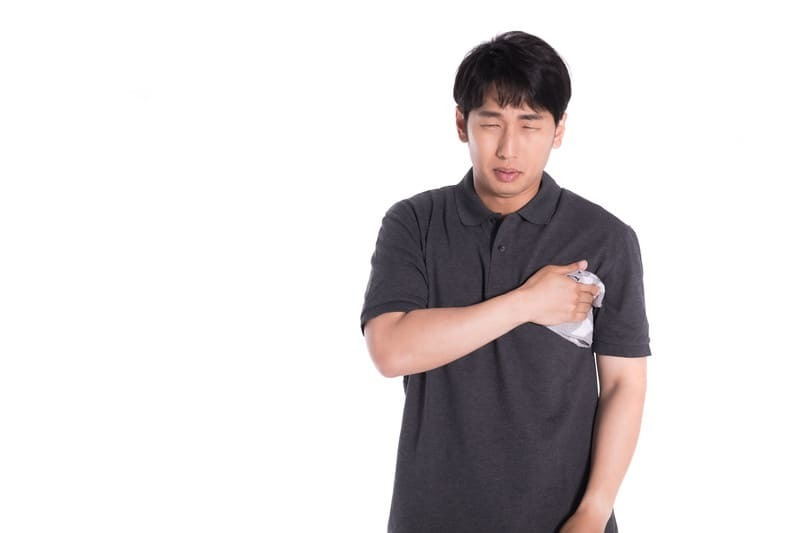

特発性後天性全身性無汗症の鍼灸
明らかな原因なく後天的に全身の汗が出なくなり、体温調節が困難になる指定難病です。皮膚科での治療と冷却対策を最優先とします。
まず知っておきたい要点と施術方針
特発性後天性全身性無汗症（AIGA）は、他の自律神経・神経異常がないにもかかわらず、後天的に全身の広範囲で発汗できなくなる指定難病です。汗腺のアセチルコリン受容体の異常などが関係すると考えられており、10〜30歳代の男性に多くみられます。体温調節ができないため熱中症や意識障害の危険が高く、皮膚科でのステロイドパルス療法などの標準治療に加え、運動制限やクールベスト・水分携行による冷却対策が不可欠です。（公式解説）
このようなお悩みはありませんか？
- ✓暑い環境や運動時でも汗が出ず、全身のほてりや体温上昇が起きる
- ✓脱力感や疲労感、めまい、動悸、吐き気など熱中症様の症状が出やすい
- ✓体が温まるとチクチクした痛みやコリン性蕁麻疹が現れやすい
- ✓冷却対策と専門治療を続けながら自律神経の乱れや疲労を整えたい
当院の施術アプローチ
院長YouTube解説・関連動画
公開日：２０２１年 １２月１０日
更新日：２０２２年 ２月 ２日
本日は特発性後天性全身性無汗症について解説させていただきます。

☆本記事の内容
- •特発性後天性全身性無汗症とは
- •特発性後天性全身性無汗症の原因
- •特発性後天性全身性無汗症の症状
- •特発性後天性全身性無汗症の改善方法
- •特発性後天性全身性無汗症のまとめ
- •原因が明らかではなく、後天的に汗をかくことができなくなる病気
- •アセチルコリン受容体に異常があることが関係している
- •特発性後天性全身性無汗症は体温調節ができない
- •特発性後天性全身性無汗症の改善方法は、ステロイド・パルス
- •体を冷やすことができる状態にしておく
銀座そうぜん鍼灸院の宗前です。
このページを書いている私は、鍼灸師として１３年、担当した利用者様数８０，０００人を誇り、病気の休職者３００人を社会復帰できるまで回復させてきた実績があります。
特発性後天性全身性無汗症は体温調節ができない

特発性後天性全身性無汗症の症状は、全身のほてり感、体温の上昇、脱力感、疲労感、顔面の紅潮、 吐き気や嘔吐、頭痛やめまい、動悸などです。
汗は体温を調節するために非常に大きな働きをしています。しかし、特発性後天性全身性無汗症を発症すると、体温を調節するために汗を出す機能に障害が起きるため、症状が現れるのです。
運動をしたりや暑いところにいたりすることで症状が現れます。症状が強く現れると、熱中症になり意識を失うこともあります。
運動をした時や暑い環境にいることで、コリン性蕁麻疹が現れることも多いです。
特発性後天性全身性無汗症の改善方法は、ステロイド・パルスという方法です。これは、副腎皮質ステロイドホルモンであるメチルプレドニゾロンを3日間点滴する方法です。
半分以上の人はこの方法で改善します。しかし、改善が見られない人もいます。その場合、免疫抑制剤などを使って改善を行うことになります。
ただし、今のところステロイド・パルスでなかなか改善が見られない人は免疫抑制剤などを使ってもあまり改善が見られていません。
特発性後天性全身性無汗症では、運動した時や長い時間暑くて湿度の高い環境いた時、熱中症になる危険があります。
そのため、運動はできるだけ避けることをお勧めします。また、暑いところに行かないようにし、できるだけ涼しい環境にいることを心がけましょう。
クールベストを着たり、水を常に持っておいたりして体を冷やすことができる状態にしておくことで症状を防ぐことができます。
皮膚のお悩みのツボ図解とセルフケア
実際の施術ではお一人おひとりの体質・症状に合わせて選穴しますが、皮膚症状（アトピー性皮膚炎・慢性蕁麻疹・掻痒感）の臨床でよく用いられる代表的なツボの目安です。

📌 代表的なツボの詳細一覧表を開く（6穴） ▼
| ツボ名 | 位置の目安 | 主な狙い | セルフケアの注意点 |
|---|---|---|---|
| 曲池（きょくち） | 肘を曲げた外側の横ジワ先端 | 皮膚の熱感・炎症・掻痒感の鎮静 | 肘に湿疹・びらん・掻き傷がある場合は直接触れない |
| 血海（けっかい） | 膝のお皿の内側上端から指3本分上 | 蕁麻疹・掻痒・末梢循環の調整 | 皮疹部の摩擦・温灸は痒みを増悪させるため回避 |
| 合谷（ごうこく） | 手の甲、親指と人差し指の骨が交わる手前 | 顔面〜上半身の皮膚トラブル・自律神経調整 | 妊娠中の強刺激は避ける。手荒れ・亀裂時は押圧しない |
| 三陰交（さんいんこう） | 内くるぶし頂点から指4本分上、すね骨の後ろ際 | 乾燥肌・夜間掻痒・体質バランス調整 | 妊娠中の強刺激は避ける。保湿後に清潔な手で優しく |
| 築賓（ちくひん） | 内くるぶしから指7本分上、ふくらはぎ内側 | 慢性蕁麻疹・アレルギー体質・皮膚炎症緩和 | 強く揉まず心地よい圧で数秒キープ |
| 百虫窩（ひゃくちゅうか） | 血海からさらに指1本分ほど上 | 強い痒み・蕁麻疹・湿疹の鎮痒サポート | 皮膚バリアを傷つけないよう必ず指の腹を使用 |
国際査読論文の科学的エビデンス
国際的な医学データベース（PubMed・Cochrane等）で報告されている皮膚症状（アトピー性皮膚炎・慢性蕁麻疹・掻痒感）領域の代表的な査読済み鍼灸研究をまとめています（標準治療との併用や研究上の限界を含めて正確に掲載）。
📚 査読論文データ・PubMed出典リンクを開く（4件） ▼
| 年・研究デザイン | 対象・規模 | 主な結果 | 限界・出典 |
|---|---|---|---|
| 2023年 多施設3群RCT | 慢性特発性蕁麻疹 330名（3大学病院） | 4週時のUAS7変化量は真鍼-8.2 vs シャム-4.1 vs 待機-2.2と統計的有意差を確認。 | 最小臨床的重要差には未達・短期追跡。 Ann Intern Med (PMID: 37956431) |
| 2024年 メタ解析 | アトピー性皮膚炎 8 RCTs（n=463） | SCORAD（MD -10.61, p=0.004）、掻痒VAS（MD -14.71, p<0.00001）、DLQI（p<0.0001）が有意改善。 | EASI・IgEは有意差なし、大規模検証が課題。 BMJ Open (PMID: 39638592) |
| 2021年 シャム対照RCT | 軽〜中等症アトピー性皮膚炎 36名（韓国） | 4週時の総SCORAD変化は真鍼-11.83 vs シャム+0.45（P<0.0001）、終了4週後も持続。 | 単施設・小規模（重症例への外挿は慎重）。 BMC Complement Med Ther (PMID: 33926433) |
| 2023年 メタ解析 | 難治性掻痒（尿毒症性掻痒）7 RCTs（n=504） | 通常治療比で有効率RR 1.28（P=0.003）、透析併用でRR 1.42（P=0.0002）と有意に掻痒軽減。 | 透析患者対象のため一般皮膚疾患への外挿に留意。 J Pain Symptom Manage (PMID: 36055470) |
参考文献・出典
- 銀座そうぜん鍼灸院「特発性後天性全身性無汗症の公式解説ページ」
- 2023年 多施設3群RCT（慢性特発性蕁麻疹 330名（3大学病院））— Ann Intern Med (PMID: 37956431)
- 2024年 メタ解析（アトピー性皮膚炎 8 RCTs（n=463））— BMJ Open (PMID: 39638592)
- 2021年 シャム対照RCT（軽〜中等症アトピー性皮膚炎 36名（韓国））— BMC Complement Med Ther (PMID: 33926433)
- 2023年 メタ解析（難治性掻痒（尿毒症性掻痒）7 RCTs（n=504））— J Pain Symptom Manage (PMID: 36055470)
よくある質問（FAQ）
Q. 鍼灸やお灸で汗をかきやすくすることはできますか？▼
Q. ほてりやめまい・吐き気が出たときはどうすればよいですか？▼
あわせて読まれる関連疾患（皮膚のお悩み）
自己免疫が筋肉や皮膚を攻撃し筋力低下や倦怠感を起こす膠原病（指定難病）です。専門医治療を最優先に、安定期の体調維持を支えます。
自己抗体により皮膚や粘膜に水疱・びらんが生じる指定難病です。専門医の免疫抑制療法を最優先に、安定期の体調ケアを補完的に行います。
高熱とともに全身の皮膚や粘膜にびらん・水疱が生じる重症薬疹（指定難病）です。緊急入院が必須で、退院後の安定期ケアのみ対応します。
弾性線維の変性により皮膚・眼・血管に障害が生じる指定難病です。専門医の定期管理を最優先に、安定期の体調維持を補完的に支えます。
出生時から全身が厚い板状の角質に覆われる最重症型の先天性魚鱗癬です。専門医療機関での全身・皮膚管理が最優先となります。
腋の下や股などの摩擦部に水ぶくれやびらんを繰り返す遺伝性皮膚疾患です。皮膚科治療と涼しく清潔な環境管理を最優先とします。
おひとりで悩まず、まずはご相談ください
銀座本院・川口・大宮・横浜・博多・田無の各院でご予約を承っております。